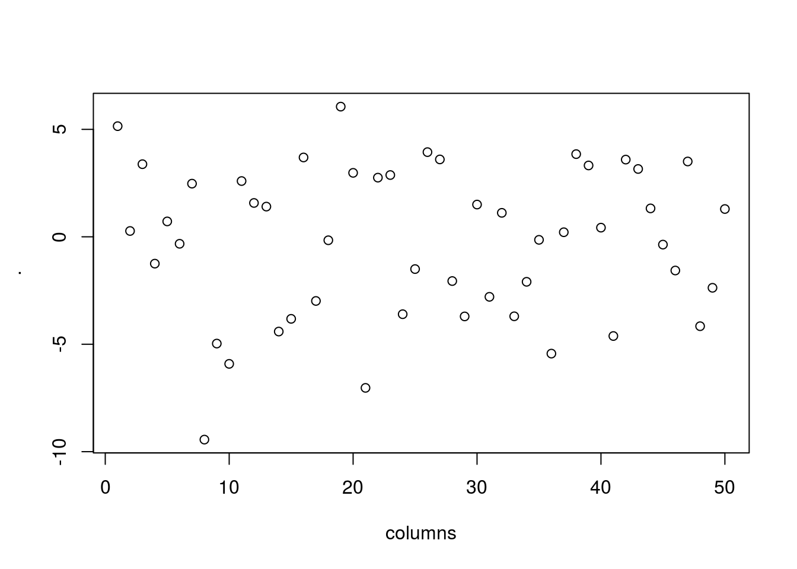

Lecture 3: Importing and transforming data
CME/STATS 195
Lan Huong Nguyen
October 4, 2018
Contents
Importing data
Tidying data
Transforming data
Chaining operations


Importing data
Working Directory
The current working directory (cmd) is the location which R is currently pointing to.
Whenever you try to read or save a file without specifying the path explicitly, the cmd will be used by default.
When are executing code from an R markdown/notebook code chunk, the cmd is the location of the document.
To see the current working directory use
getwd():
getwd() # with no arguments## [1] "/home/lanhuong/MEGA/Teaching/cme195_intro_to_R/cme195.github.io/assets/lectures"- To change the working directory use
setwd(path_name)with a specified path as na argument:
setwd("path/to/directory")Paths and directory names
R inherits its file and folder naming conventions from unix, and uses forward slashes for the directories, e.g.
/home/lan/folder/This is, because backslashes serve a different purpose; they are used as escape characters to isolate special characters and stop them from being immediately interpreted.
When working with R on Windows, you can use either:
C:/Path/To/A/FileorC:\\Path\\To\\A\\FileUse a “
Tab” for autocompletion to find file paths more easily.To avoid problems, directory names should NOT contain spaces and special characters.
Importing text data
Text Files in a table format can be read and saved to a selected variable using a
read.table()function. Use?read.tableto learn more about the function.A common text file format is a comma delimited text file,
.csv. These files use a comma as column separators, e.g:
Year,Student,Major
2009, John Doe,Statistics
2009, Bart Simpson, Mathematics I- To read these files use the following command:
mydata <- read.table("path/to/filename.csv", header=TRUE, sep = ",")
# read.csv() has covenient argument defaults for '.csv' files
mydata <- read.csv("path/to/filename.csv")- Optionally, use
row.namesorcol.namesarguments to set the row and column names.
The readr package
Many R packages provide examples of data. However, sooner or later you will need to work with your own data.
readr is for reading rectangular text data into R.
readr supports several file formats with seven read_<...> functions:
read_csv(): comma-separated (CSV) filesread_tsv(): tab-separated filesread_delim(): general delimited filesread_fwf(): fixed-width filesread_table(): tabular files where colums are separated by white-spaceread_log(): web log files
In many cases it just works: supply path to a file and get a tibble back.
Comparison with base R
Why are we learning the readr package?
it is up to 10x faster
it produces tibbles instead of data.frames
better parsing (e.g. does not convert strings to factors)
more reproducible on different systems
progress bar for large files
Reading comma-separated files
All read_<...>() functions have a similar syntax, so we focus on read_csv().
# Get path to example dataset
readr_example("mtcars.csv")## [1] "/home/lanhuong/R/x86_64-pc-linux-gnu-library/3.4/readr/extdata/mtcars.csv"mtcars <- read_csv(readr_example("mtcars.csv"))## Parsed with column specification:
## cols(
## mpg = col_double(),
## cyl = col_integer(),
## disp = col_double(),
## hp = col_integer(),
## drat = col_double(),
## wt = col_double(),
## qsec = col_double(),
## vs = col_integer(),
## am = col_integer(),
## gear = col_integer(),
## carb = col_integer()
## )mtcars is a dataset on fuel consumption, and other 10 aspects of design and performance (?mtcars).
The read_csv() function
Also works with inline csv files (useful for experimenting).
read_csv(
"a,b,c
1,2,3
4,5,6"
)## # A tibble: 2 x 3
## a b c
## <int> <int> <int>
## 1 1 2 3
## 2 4 5 6read_csv(
"a,b,c
1,2,3
4,5,6",
col_names=FALSE
)## # A tibble: 3 x 3
## X1 X2 X3
## <chr> <chr> <chr>
## 1 a b c
## 2 1 2 3
## 3 4 5 6Other useful arguments: skip lines, symbol for missing data.
Now you can read most CSV files, also easily adapt to read_tsv(),
read_fwf(). For the others, you need to know how readr works inside.
How readr parses data?
parse_logical(c("TRUE","FALSE"))## [1] TRUE FALSEparse_integer(c("1","2","3","NA"))## [1] 1 2 3 NAParsing vectors:
parse_logical(),parse_integer()parse_double(),parse_number(): for numbers from other countriesparse_character(): for character encodings.parse_datetime(),parse_date(),parse_time()parse_factor()
Potential difficulties
Parsing data is not always trivial:
Numbers are written differently in different parts of the world (“,” vs “.” for separatimg thousands)
Numbers are often surrounded by other characters (“$1000”, “10%”)
Numbers often contain “grouping” characters (“1,000,000”)
There are many different ways of writing dates and times
Times can be in different timezones
Encodings: special characters in other languages
Locales
A locale specifies common options varying between languages and places
To create a new locale, you use the locale() function:
locale(
date_names = "en",
date_format = "%AD",
time_format = "%AT",
decimal_mark = ".",
grouping_mark = ",",
tz = "UTC",
encoding = "UTF-8",
asciify = FALSE)## <locale>
## Numbers: 123,456.78
## Formats: %AD / %AT
## Timezone: UTC
## Encoding: UTF-8
## <date_names>
## Days: Sunday (Sun), Monday (Mon), Tuesday (Tue), Wednesday (Wed), Thursday
## (Thu), Friday (Fri), Saturday (Sat)
## Months: January (Jan), February (Feb), March (Mar), April (Apr), May (May),
## June (Jun), July (Jul), August (Aug), September (Sep), October
## (Oct), November (Nov), December (Dec)
## AM/PM: AM/PM# More on locales can be found in a vignette
vignette("locales")Parsing dates
parse_date() expects a four digit year, month, day separated by “-” or “/”:
parse_date("2010-10-01")## [1] "2010-10-01"Example: French format with full name of month:
parse_date("1 janvier 2010")## Warning: 1 parsing failure.
## row # A tibble: 1 x 4 col row col expected actual expected <int> <int> <chr> <chr> actual 1 1 NA "date like " 1 janvier 2010## [1] NAparse_date("1 janvier 2010", format="%d %B %Y", locale=locale("fr"))## [1] "2010-01-01"Learn more by typing ?parse_date
Parsing times
parse_time() expects an “hour : minutes” pair
(optionally proceeded by “:seconds”, and “am/pm” specifier).
parse_time("01:10 am")## 01:10:00Parsing dates and times:
parse_datetime("2001-10-10 20:10", locale = locale(tz = "Europe/Dublin"))## [1] "2001-10-10 20:10:00 IST"For more details, see the book R for data science or use the documentation.
Parsing numbers
parse_number() ignores non-numeric characters before and after.
parse_number("20%")## [1] 20parse_number("$100")## [1] 100parse_number("cost: $123.45")## [1] 123.45Parsing numbers with locales
# Separation used in Switzerland
parse_number("123'456'789", locale = locale(grouping_mark = "'"))## [1] 123456789Parsing real numbers
Real numbers using a different decimal mark
parse_double("1,23")## Warning: 1 parsing failure.
## row # A tibble: 1 x 4 col row col expected actual expected <int> <int> <chr> <chr> actual 1 1 NA no trailing characters ,23## [1] NA
## attr(,"problems")
## # A tibble: 1 x 4
## row col expected actual
## <int> <int> <chr> <chr>
## 1 1 NA no trailing characters ,23parse_double("1,23", locale = locale(decimal_mark = ","))## [1] 1.23readr’s strategy for parsing files
readr uses a heuristic to determine column type, using the first 1000 rows.
You can emulate this process with two functions:
guess_parser(): returns readr’s best guessparse_guess(): uses that guess to parse the column
The heuristic tries a sequence of types, stopping when it finds a match.
If none of these rules apply, then the column will stay as a vector of strings.
guess_parser("15:01")## [1] "time"guess_parser("Oct 10, 2010; 15:01")## [1] "character"parse_guess("12,352,561")## [1] 12352561parse_guess(c("TRUE", "FALSE"))## [1] TRUE FALSEWhen the default strategy fails
The default strategy does not always work, e.g. if the first 1000 rows might be a special case. Suppose, your dataset with two columns:
# Top 1000 lines are (integer, missing)
readLines(readr_example("challenge.csv"), 10)## [1] "x,y" "404,NA" "4172,NA" "3004,NA" "787,NA" "37,NA" "2332,NA"
## [8] "2489,NA" "1449,NA" "3665,NA"# The remaining are (real number, date)
tail(readLines(readr_example("challenge.csv"), 3000), 4)## [1] "0.47193897631950676,2014-08-04" "0.7183186465408653,2015-08-16"
## [3] "0.26987858884967864,2020-02-04" "0.608237189007923,2019-01-06"challenge <- read_csv(readr_example("challenge.csv"))## Parsed with column specification:
## cols(
## x = col_integer(),
## y = col_character()
## )## Warning in rbind(names(probs), probs_f): number of columns of result is not a
## multiple of vector length (arg 1)## Warning: 1000 parsing failures.
## row # A tibble: 5 x 5 col row col expected actual file expected <int> <chr> <chr> <chr> <chr> actual 1 1001 x no trailing ch… .238379750… '/home/lanhuong/R/x86_64-pc-linux-gn… file 2 1002 x no trailing ch… .411679971… '/home/lanhuong/R/x86_64-pc-linux-gn… row 3 1003 x no trailing ch… .746071676… '/home/lanhuong/R/x86_64-pc-linux-gn… col 4 1004 x no trailing ch… .723450553… '/home/lanhuong/R/x86_64-pc-linux-gn… expected 5 1005 x no trailing ch… .614524137… '/home/lanhuong/R/x86_64-pc-linux-gn…
## ... ................. ... ............................................................................... ........ ............................................................................... ...... ............................................................................... .... ............................................................................... ... ............................................................................... ... ............................................................................... ........ ...............................................................................
## See problems(...) for more details.Examining what went wrong
See problems(…) for more details.
problems(challenge)## # A tibble: 1,000 x 5
## row col expected actual file
## <int> <chr> <chr> <chr> <chr>
## 1 1001 x no trailing ch… .238379750… '/home/lanhuong/R/x86_64-pc-linux-g…
## 2 1002 x no trailing ch… .411679971… '/home/lanhuong/R/x86_64-pc-linux-g…
## 3 1003 x no trailing ch… .746071676… '/home/lanhuong/R/x86_64-pc-linux-g…
## 4 1004 x no trailing ch… .723450553… '/home/lanhuong/R/x86_64-pc-linux-g…
## 5 1005 x no trailing ch… .614524137… '/home/lanhuong/R/x86_64-pc-linux-g…
## 6 1006 x no trailing ch… .473980569… '/home/lanhuong/R/x86_64-pc-linux-g…
## 7 1007 x no trailing ch… .578461039… '/home/lanhuong/R/x86_64-pc-linux-g…
## 8 1008 x no trailing ch… .241593722… '/home/lanhuong/R/x86_64-pc-linux-g…
## 9 1009 x no trailing ch… .114378662… '/home/lanhuong/R/x86_64-pc-linux-g…
## 10 1010 x no trailing ch… .298344632… '/home/lanhuong/R/x86_64-pc-linux-g…
## # … with 990 more rowsFixing the column specifications
# Automatic colomn specifications are:
challenge <- read_csv(readr_example("challenge.csv"),
col_types = cols(x = col_integer(), y = col_character()) )## Warning in rbind(names(probs), probs_f): number of columns of result is not a
## multiple of vector length (arg 1)## Warning: 1000 parsing failures.
## row # A tibble: 5 x 5 col row col expected actual file expected <int> <chr> <chr> <chr> <chr> actual 1 1001 x no trailing ch… .238379750… '/home/lanhuong/R/x86_64-pc-linux-gn… file 2 1002 x no trailing ch… .411679971… '/home/lanhuong/R/x86_64-pc-linux-gn… row 3 1003 x no trailing ch… .746071676… '/home/lanhuong/R/x86_64-pc-linux-gn… col 4 1004 x no trailing ch… .723450553… '/home/lanhuong/R/x86_64-pc-linux-gn… expected 5 1005 x no trailing ch… .614524137… '/home/lanhuong/R/x86_64-pc-linux-gn…
## ... ................. ... ............................................................................... ........ ............................................................................... ...... ............................................................................... .... ............................................................................... ... ............................................................................... ... ............................................................................... ........ ...............................................................................
## See problems(...) for more details.# It seems that first column should be a real number:
( challenge <- read_csv(readr_example("challenge.csv"),
col_types = cols(x = col_double(), y = col_character()) ) )## # A tibble: 2,000 x 2
## x y
## <dbl> <chr>
## 1 404 <NA>
## 2 4172 <NA>
## 3 3004 <NA>
## 4 787 <NA>
## 5 37 <NA>
## 6 2332 <NA>
## 7 2489 <NA>
## 8 1449 <NA>
## 9 3665 <NA>
## 10 3863 <NA>
## # … with 1,990 more rowsFixing the column specifications
Are we done? Check the “y” column
tail(challenge)## # A tibble: 6 x 2
## x y
## <dbl> <chr>
## 1 0.805 2019-11-21
## 2 0.164 2018-03-29
## 3 0.472 2014-08-04
## 4 0.718 2015-08-16
## 5 0.270 2020-02-04
## 6 0.608 2019-01-06Not yet: dates are stored as strings. To fix this, we use:
challenge <- read_csv(readr_example("challenge.csv"),
col_types = cols(x = col_double(), y = col_date() ) )Every parse_<...>() function has a corresponding col_<...>() function. col_<...>() tells readr how to load the data.
Diagnosing problems
Maybe easier to diagnose problems if all columns are read as characters:
challenge2 <- read_csv(readr_example("challenge.csv"),
col_types = cols(.default = col_character()) )
head(challenge2, 3)## # A tibble: 3 x 2
## x y
## <chr> <chr>
## 1 404 <NA>
## 2 4172 <NA>
## 3 3004 <NA>and then use type_convert() to apply parsing heuristics to character columns.
head(type_convert(challenge2), 3)## Parsed with column specification:
## cols(
## x = col_double(),
## y = col_date(format = "")
## )## # A tibble: 3 x 2
## x y
## <dbl> <date>
## 1 404 NA
## 2 4172 NA
## 3 3004 NAImporting other types of data
We will not go into the details in this course. We only list a few other useful packages for importing data.
Rectangular data:
- Package
havenreads SPSS, Stata, and SAS files. - Package
readxlreads excel files (both .xls and .xlsx). - Package
DBI, along with a database specific backend (e.g. RMySQL, RSQLite, RPostgreSQL etc) allows you to run SQL queries against a database and return a data frame.
Hierarchical data:
jsonlitefor json (common for browser-server communications)xml2for XML (common for textual data in web services)
And many more are available.
Exercise 1
Download “Lec3_Exercises.Rmd” file from the Lectures tab on class website.
Open the file in RStudio.
Do Exercise 1.
Tidying data
What is tidy data?
There are three interrelated rules which make a dataset tidy:
Each variable must have its own column.
Each observation must have its own row.
Each value must have its own cell.
 Source: http://r4ds.had.co.nz
Source: http://r4ds.had.co.nz
Datasets in different forms
Each dataset shows the same values of four variables country, year, population, and number of TB cases, but each dataset organises the values in a different way.
table1## # A tibble: 6 x 4
## country year cases population
## <chr> <int> <int> <int>
## 1 Afghanistan 1999 745 19987071
## 2 Afghanistan 2000 2666 20595360
## 3 Brazil 1999 37737 172006362
## 4 Brazil 2000 80488 174504898
## 5 China 1999 212258 1272915272
## 6 China 2000 213766 1280428583table2## # A tibble: 12 x 4
## country year type count
## <chr> <int> <chr> <int>
## 1 Afghanistan 1999 cases 745
## 2 Afghanistan 1999 population 19987071
## 3 Afghanistan 2000 cases 2666
## 4 Afghanistan 2000 population 20595360
## 5 Brazil 1999 cases 37737
## 6 Brazil 1999 population 172006362
## 7 Brazil 2000 cases 80488
## 8 Brazil 2000 population 174504898
## 9 China 1999 cases 212258
## 10 China 1999 population 1272915272
## 11 China 2000 cases 213766
## 12 China 2000 population 1280428583In this example, only table1 is tidy. It’s the only representation where each column is a variable.
table3## # A tibble: 6 x 3
## country year rate
## * <chr> <int> <chr>
## 1 Afghanistan 1999 745/19987071
## 2 Afghanistan 2000 2666/20595360
## 3 Brazil 1999 37737/172006362
## 4 Brazil 2000 80488/174504898
## 5 China 1999 212258/1272915272
## 6 China 2000 213766/1280428583table4a## # A tibble: 3 x 3
## country `1999` `2000`
## * <chr> <int> <int>
## 1 Afghanistan 745 2666
## 2 Brazil 37737 80488
## 3 China 212258 213766table4b## # A tibble: 3 x 3
## country `1999` `2000`
## * <chr> <int> <int>
## 1 Afghanistan 19987071 20595360
## 2 Brazil 172006362 174504898
## 3 China 1272915272 1280428583Why tidy data?
If you pick one consistent way of storing data, then you can reuse the same tools.
R is naturally vectorized. Most built-in R functions work with vectors of values.
dplyr,ggplot2, and other packages in thetidyverseare designed to work with tidy data.
Why you need to know how to tidy data?
You cannot assume data will come in as tidy. In fact, most data is not.
Many people aren’t familiar with the principles of tidy data.
Data is often organised to facilitate some use other than analysis, e.g. storage efficiency, compactness or ease of data entry.
This means for most real analyses, you’ll need to do some tidying.
The tidyr package
Tidy datasets are all alike, but every messy dataset is messy in its own way.
–– Hadley Wickham
In the tidyverse, tidying data is done with tidyr package.
The same data can be represented in many different ways. Some are more practical than others.
Spreading, gathering, separating and uniting columns
First step. Determine what are the variables and what are the observations.
Second step. Often, you need to deal with some of the following issues:
One variable is spread across multiple columns \(\implies\) need to
gather().One observation might be scattered across multiple rows \(\implies\) need to
spread().One column contains values fore multiple variables \(\implies\) need to
separate().Multiple columns store information on a single variable \(\implies\) need to
unite().
tidyr can help you solve these problems.
Gathering
Common problem: some column names are not the names, but the values of a variable.
table4a## # A tibble: 3 x 3
## country `1999` `2000`
## * <chr> <int> <int>
## 1 Afghanistan 745 2666
## 2 Brazil 37737 80488
## 3 China 212258 213766gather() makes wide tables narrower and longer:

Gathering
To tidy up table4a, we need to gather() those columns into a new pair of variables. We need three pieces of information to do this:
The set of columns that represent values, not variables.
The name for the variable whose values are given in these columns’ names (the
key).The name for the variable whose values are spread over these columns’ cells (the
value).
table4a## # A tibble: 3 x 3
## country `1999` `2000`
## * <chr> <int> <int>
## 1 Afghanistan 745 2666
## 2 Brazil 37737 80488
## 3 China 212258 213766gather(table4a, `1999`:`2000`, key = year, value = cases)## # A tibble: 6 x 3
## country year cases
## <chr> <chr> <int>
## 1 Afghanistan 1999 745
## 2 Brazil 1999 37737
## 3 China 1999 212258
## 4 Afghanistan 2000 2666
## 5 Brazil 2000 80488
## 6 China 2000 213766Spreading
Spreading is the opposite of gathering, and you use it when an observation is scattered across multiple rows.
spread() makes long tables shorter and wider:

Spreading
To spread up table2, we only need two parameters:
The column that contains variable names (the
key).The column that contains values from multiple variables (the
value).
table2## # A tibble: 12 x 4
## country year type count
## <chr> <int> <chr> <int>
## 1 Afghanistan 1999 cases 745
## 2 Afghanistan 1999 population 19987071
## 3 Afghanistan 2000 cases 2666
## 4 Afghanistan 2000 population 20595360
## 5 Brazil 1999 cases 37737
## 6 Brazil 1999 population 172006362
## 7 Brazil 2000 cases 80488
## 8 Brazil 2000 population 174504898
## 9 China 1999 cases 212258
## 10 China 1999 population 1272915272
## 11 China 2000 cases 213766
## 12 China 2000 population 1280428583spread(table2, key = type, value = count)## # A tibble: 6 x 4
## country year cases population
## <chr> <int> <int> <int>
## 1 Afghanistan 1999 745 19987071
## 2 Afghanistan 2000 2666 20595360
## 3 Brazil 1999 37737 172006362
## 4 Brazil 2000 80488 174504898
## 5 China 1999 212258 1272915272
## 6 China 2000 213766 1280428583Separate
Sometimes, a dataset has a column with values corresponding to multiple variables.
We might want to split such a column into multiple new ones.
separate() makes narrow tables wider.

Separate
separate() splits one column into multiple columns wherever a separator appears.
table3## # A tibble: 6 x 3
## country year rate
## * <chr> <int> <chr>
## 1 Afghanistan 1999 745/19987071
## 2 Afghanistan 2000 2666/20595360
## 3 Brazil 1999 37737/172006362
## 4 Brazil 2000 80488/174504898
## 5 China 1999 212258/1272915272
## 6 China 2000 213766/1280428583separate(table3, col = rate,
into = c("cases", "population"))## # A tibble: 6 x 4
## country year cases population
## <chr> <int> <chr> <chr>
## 1 Afghanistan 1999 745 19987071
## 2 Afghanistan 2000 2666 20595360
## 3 Brazil 1999 37737 172006362
## 4 Brazil 2000 80488 174504898
## 5 China 1999 212258 1272915272
## 6 China 2000 213766 1280428583Some important features of separate()
- by default, it splits values wherever it sees a non-alphanumeric character. You can specify the separator.
separate(table3, rate, into = c("cases", "population"), sep = "/")- by default, it leaves the type of the column as is. You can ask it to convert to better types.
separate(table3, col = rate, into = c("cases", "population"), convert = T)Unite
unite() is the opposite of separate():
it combines multiple columns into a single column.
unite() makes wider tables narrower.

Unite
unite() takes arguments:
- a
tibble(ordata.frame) - the name of the new column
- names of columns to be combined
- a separator used when uniting the columns
table5## # A tibble: 6 x 4
## country century year rate
## * <chr> <chr> <chr> <chr>
## 1 Afghanistan 19 99 745/19987071
## 2 Afghanistan 20 00 2666/20595360
## 3 Brazil 19 99 37737/172006362
## 4 Brazil 20 00 80488/174504898
## 5 China 19 99 212258/1272915272
## 6 China 20 00 213766/1280428583unite(table5, col = full_year, century, year,
sep = "")## # A tibble: 6 x 3
## country full_year rate
## <chr> <chr> <chr>
## 1 Afghanistan 1999 745/19987071
## 2 Afghanistan 2000 2666/20595360
## 3 Brazil 1999 37737/172006362
## 4 Brazil 2000 80488/174504898
## 5 China 1999 212258/1272915272
## 6 China 2000 213766/1280428583Transforming data
The dplyr package
The dplyr package is also a part of the core tidyverse, which:
Introduces a grammar of data manipulation.
Gives a code-efficient for way for data exploration and transformation.
Is fast on data frames (written in C++): has speed of C and ease of R.
- Intuitive to write and easy to read, esp. when using the chaining syntax.
You should use dplyr even as a beginner R user, and here is why.
dplyr verbs (functions)
dplyr utilities handle the vast majority of your data manipulation needs:
filter()- for picking observations by their values,select()- for picking variables by their names,arrange()- for reorder the rows,mutate()- for creating new variables with functions on existing variables,summarise()- for collapse many values down to a single summary.
All of the above can be done using base R functions, but they would be less computationally efficient, and require writing more lines of (ugly) code.
The structure of dplyr functions
All verbs work similarly:
The first argument is a tibble (or data frame)
The subsequent ones describe what to do, using the variable names
The result is a new tibble
Learn more about dplyr from a turtorial written by its creator, Hadley Wickham.
The movie industry dataset
movies.csv contains information on last three decades of movies.
The data has been scraped from the IMDb website and can be accessed from a github repo.
url <- "https://raw.githubusercontent.com/Juanets/movie-stats/master/movies.csv"
movies <- read_csv(url)
movies## # A tibble: 6,820 x 15
## budget company country director genre gross name rating released runtime
## <dbl> <chr> <chr> <chr> <chr> <dbl> <chr> <chr> <chr> <int>
## 1 8.00e6 Columb… USA Rob Rei… Adve… 5.23e7 Stan… R 1986-08… 89
## 2 6.00e6 Paramo… USA John Hu… Come… 7.01e7 Ferr… PG-13 1986-06… 103
## 3 1.50e7 Paramo… USA Tony Sc… Acti… 1.80e8 Top … PG 1986-05… 110
## 4 1.85e7 Twenti… USA James C… Acti… 8.52e7 Alie… R 1986-07… 137
## 5 9.00e6 Walt D… USA Randal … Adve… 1.86e7 Flig… PG 1986-08… 90
## 6 6.00e6 Hemdale UK Oliver … Drama 1.39e8 Plat… R 1987-02… 120
## 7 2.50e7 Henson… UK Jim Hen… Adve… 1.27e7 Laby… PG 1986-06… 101
## 8 6.00e6 De Lau… USA David L… Drama 8.55e6 Blue… R 1986-10… 120
## 9 9.00e6 Paramo… USA Howard … Come… 4.05e7 Pret… PG-13 1986-02… 96
## 10 1.50e7 SLM Pr… USA David C… Drama 4.05e7 The … R 1986-08… 96
## # … with 6,810 more rows, and 5 more variables: score <dbl>, star <chr>,
## # votes <int>, writer <chr>, year <int>filter(): retain rows matching a criteria
filter() allows you to subset observations based on their values.
# note: both comma and "&" represent AND condition
filter(movies, genre == "Comedy", director == "Woody Allen")## # A tibble: 27 x 15
## budget company country director genre gross name rating released runtime
## <dbl> <chr> <chr> <chr> <chr> <dbl> <chr> <chr> <chr> <int>
## 1 6.40e6 Orion … USA Woody A… Come… 4.01e7 Hann… PG-13 1986-03… 107
## 2 1.60e7 Orion … USA Woody A… Come… 1.48e7 Radi… PG 1987-01… 88
## 3 1.90e7 Jack R… USA Woody A… Come… 1.83e7 Crim… PG-13 1989-11… 104
## 4 1.50e7 Touchs… USA Woody A… Come… 1.08e7 New … PG 1989-03… 124
## 5 1.20e7 Orion … USA Woody A… Come… 7.33e6 Alice PG-13 1991-01… 106
## 6 1.40e7 Orion … USA Woody A… Come… 2.74e6 Shad… PG-13 1992-03… 85
## 7 2.00e7 TriSta… USA Woody A… Come… 1.06e7 Husb… R 1992-09… 103
## 8 1.35e7 TriSta… USA Woody A… Come… 1.13e7 Manh… PG 1993-08… 104
## 9 2.00e7 Miramax USA Woody A… Come… 1.34e7 Bull… R 1995-02… 98
## 10 1.50e7 Sweetl… USA Woody A… Come… 6.70e6 Migh… R 1995-11… 95
## # … with 17 more rows, and 5 more variables: score <dbl>, star <chr>,
## # votes <int>, writer <chr>, year <int># base R approach would be more wordy:
movies[movies$genre == "Comedy" & movies$director == "Woody Allen", ]Package dplyr executes the filtering and returns a new data frame. It never modifies the original one.
Logical operators
Multiple arguments to filter() are combined with “and”: all expressions must be true, for a row to be included in the output. For other types of combinations, you’ll need to use Boolean operators yourself: & is “and”, | is “or”, and ! is “not”:

# Using AND operator
filter(movies, country == "USA", budget > 2.5e8)
# same as filter(movies, country == "USA" & budget > 2.5e8)
# Using OR operator
filter(movies, country == "USA" | budget > 2.5e8)
# Using xor()
filter(movies, xor(score > 9, budget > 2.5e8))# you can also use %in% operator
filter(movies, country %in% c("Peru", "Colombia", "Chile"))## # A tibble: 8 x 15
## budget company country director genre gross name rating released runtime
## <dbl> <chr> <chr> <chr> <chr> <dbl> <chr> <chr> <chr> <int>
## 1 0. Concor… Peru "August… Acti… 4.11e5 Ultr… R 1990-03… 100
## 2 4.50e7 Warner… Peru Luis Ll… Acti… 5.74e7 The … R 1994-10… 110
## 3 3.00e6 HBO Fi… Colomb… Joshua … Crime 6.52e6 Mari… R 2004-08… 101
## 4 0. Partic… Chile "Pablo … Drama 2.34e6 No R 2012-11… 118
## 5 2.60e7 Alcon … Chile Patrici… Biog… 1.22e7 Los … PG-13 2015-11… 127
## 6 1.40e6 Buffal… Colomb… Ciro Gu… Adve… 1.33e6 Embr… NOT R… 2015-05… 125
## 7 9.00e6 Fox Se… Chile "Pablo … Biog… 1.40e7 Jack… R 2016-12… 100
## 8 0. AZ Fil… Chile "Pablo … Biog… 9.39e5 Neru… R 2017-03… 107
## # … with 5 more variables: score <dbl>, star <chr>, votes <int>, writer <chr>,
## # year <int>select(): pick columns by name
select() let’s you choose a subset variables, specified by name.
Note, there is no need for quotation marks in dplyr:
# dplyr approach
select(movies, name, country, year, genre)## # A tibble: 6,820 x 4
## name country year genre
## <chr> <chr> <int> <chr>
## 1 Stand by Me USA 1986 Adventure
## 2 Ferris Bueller's Day Off USA 1986 Comedy
## 3 Top Gun USA 1986 Action
## 4 Aliens USA 1986 Action
## 5 Flight of the Navigator USA 1986 Adventure
## 6 Platoon UK 1986 Drama
## 7 Labyrinth UK 1986 Adventure
## 8 Blue Velvet USA 1986 Drama
## 9 Pretty in Pink USA 1986 Comedy
## 10 The Fly USA 1986 Drama
## # … with 6,810 more rows# base R approach would be:
movies[, c("name", "year", "genre")]select(movies, name, genre:score) # use colon to select contiguous columns, ## # A tibble: 6,820 x 7
## name genre gross rating released runtime score
## <chr> <chr> <dbl> <chr> <chr> <int> <dbl>
## 1 Stand by Me Adventure 52287414 R 1986-08-22 89 8.1
## 2 Ferris Bueller's Day Off Comedy 70136369 PG-13 1986-06-11 103 7.8
## 3 Top Gun Action 179800601 PG 1986-05-16 110 6.9
## 4 Aliens Action 85160248 R 1986-07-18 137 8.4
## 5 Flight of the Navigator Adventure 18564613 PG 1986-08-01 90 6.9
## 6 Platoon Drama 138530565 R 1987-02-06 120 8.1
## 7 Labyrinth Adventure 12729917 PG 1986-06-27 101 7.4
## 8 Blue Velvet Drama 8551228 R 1986-10-23 120 7.8
## 9 Pretty in Pink Comedy 40471663 PG-13 1986-02-28 96 6.8
## 10 The Fly Drama 40456565 R 1986-08-15 96 7.5
## # … with 6,810 more rowsselect(movies, -(star:writer)) # To drop columns use a minus, "-" ## # A tibble: 6,820 x 12
## budget company country director genre gross name rating released runtime
## <dbl> <chr> <chr> <chr> <chr> <dbl> <chr> <chr> <chr> <int>
## 1 8.00e6 Columb… USA Rob Rei… Adve… 5.23e7 Stan… R 1986-08… 89
## 2 6.00e6 Paramo… USA John Hu… Come… 7.01e7 Ferr… PG-13 1986-06… 103
## 3 1.50e7 Paramo… USA Tony Sc… Acti… 1.80e8 Top … PG 1986-05… 110
## 4 1.85e7 Twenti… USA James C… Acti… 8.52e7 Alie… R 1986-07… 137
## 5 9.00e6 Walt D… USA Randal … Adve… 1.86e7 Flig… PG 1986-08… 90
## 6 6.00e6 Hemdale UK Oliver … Drama 1.39e8 Plat… R 1987-02… 120
## 7 2.50e7 Henson… UK Jim Hen… Adve… 1.27e7 Laby… PG 1986-06… 101
## 8 6.00e6 De Lau… USA David L… Drama 8.55e6 Blue… R 1986-10… 120
## 9 9.00e6 Paramo… USA Howard … Come… 4.05e7 Pret… PG-13 1986-02… 96
## 10 1.50e7 SLM Pr… USA David C… Drama 4.05e7 The … R 1986-08… 96
## # … with 6,810 more rows, and 2 more variables: score <dbl>, year <int>select() helpers
You can use the following functions to help select the columns:
starts_with()ends_with()contains()matches()(matches a regular expression)num_range("x", 1:4): pickes variables x1, x2, x3, x4
Examples:
select(movies, starts_with("r"))
select(movies, ends_with("e"))
select(movies, contains("re"))arrange(): reorder rows
arrange() takes a data frame and a set of column names to order by.
For descending order, use the function desc() around the column name.
print(arrange(movies, runtime), n = 4)## # A tibble: 6,820 x 15
## budget company country director genre gross name rating released runtime
## <dbl> <chr> <chr> <chr> <chr> <dbl> <chr> <chr> <chr> <int>
## 1 0. Iwerks… France Jean-Ja… Adve… 1.51e7 Wing… G 1996-09… 50
## 2 1.25e7 Univer… USA Don Blu… Anim… 4.81e7 The … G 1988-11… 69
## 3 6.00e3 Next W… UK Christo… Crime 4.85e4 Foll… R 1999-11… 69
## 4 0. Hyperi… USA Bruce W… Anim… 8.44e6 "B\x… PG-13 1992-07… 70
## # … with 6,816 more rows, and 5 more variables: score <dbl>, star <chr>,
## # votes <int>, writer <chr>, year <int># use `desc` for descending
print(arrange(movies, desc(budget)), n = 4)## # A tibble: 6,820 x 15
## budget company country director genre gross name rating released runtime
## <dbl> <chr> <chr> <chr> <chr> <dbl> <chr> <chr> <chr> <int>
## 1 3.00e8 Walt D… USA Gore Ve… Acti… 3.09e8 Pira… PG-13 2007-05… 169
## 2 2.60e8 Walt D… USA Nathan … Anim… 2.01e8 Tang… PG 2010-11… 100
## 3 2.58e8 Columb… USA Sam Rai… Acti… 3.37e8 Spid… PG-13 2007-05… 139
## 4 2.50e8 Warner… UK David Y… Adve… 3.02e8 Harr… PG 2009-07… 153
## # … with 6,816 more rows, and 5 more variables: score <dbl>, star <chr>,
## # votes <int>, writer <chr>, year <int>mutate(): add new variables
mutate() adds new columns that are a function of the existing ones
movies <- mutate(movies, profit = gross - budget)
select(movies, name, gross, budget, profit)## # A tibble: 6,820 x 4
## name gross budget profit
## <chr> <dbl> <dbl> <dbl>
## 1 Stand by Me 52287414 8000000 44287414
## 2 Ferris Bueller's Day Off 70136369 6000000 64136369
## 3 Top Gun 179800601 15000000 164800601
## 4 Aliens 85160248 18500000 66660248
## 5 Flight of the Navigator 18564613 9000000 9564613
## 6 Platoon 138530565 6000000 132530565
## 7 Labyrinth 12729917 25000000 -12270083
## 8 Blue Velvet 8551228 6000000 2551228
## 9 Pretty in Pink 40471663 9000000 31471663
## 10 The Fly 40456565 15000000 25456565
## # … with 6,810 more rowsTo discard old variables, use transmute() instead of mutate().
# base R approach to create a new variable 'profit'
movies$profit <- movies$gross - movies$budget# Generating multiple new variables
movies <- mutate(
movies,
profit = gross - budget,
gross_in_mil = gross/10^6,
budget_in_mil = budget/10^6,
profit_in_mil = profit/10^6
)
select(movies, name, year, country, contains("_in_mil"), profit)## # A tibble: 6,820 x 7
## name year country gross_in_mil budget_in_mil profit_in_mil profit
## <chr> <int> <chr> <dbl> <dbl> <dbl> <dbl>
## 1 Stand by Me 1986 USA 52.3 8 44.3 4.43e7
## 2 Ferris Buel… 1986 USA 70.1 6 64.1 6.41e7
## 3 Top Gun 1986 USA 180. 15 165. 1.65e8
## 4 Aliens 1986 USA 85.2 18.5 66.7 6.67e7
## 5 Flight of t… 1986 USA 18.6 9 9.56 9.56e6
## 6 Platoon 1986 UK 139. 6 133. 1.33e8
## 7 Labyrinth 1986 UK 12.7 25 -12.3 -1.23e7
## 8 Blue Velvet 1986 USA 8.55 6 2.55 2.55e6
## 9 Pretty in P… 1986 USA 40.5 9 31.5 3.15e7
## 10 The Fly 1986 USA 40.5 15 25.5 2.55e7
## # … with 6,810 more rowsAny vectorized function can be used with mutate(), including:
- arithmetic operators (+,-,*,/, %, %%),
- logical operators (<,<=,>,>=,==,!=),
- logarithmic and exponential transfomations (
log, log10, exp), - offsets (
lead, lag), - cummulative rolling aggregates (
cumsum,cumprod,cummin,cummax), - ranking (
min_rank,percent_rank).
summarise(): reduce variables to values
summarize() can be used to aggregate data or to compute a summarizing value of interest.
summarise(movies,
tot_gross_in_bil = sum(gross)/1e9,
mean_gross_in_mil = mean(gross)/1e6,
mean_profit_in_mil = mean(profit)/1e6
)## # A tibble: 1 x 3
## tot_gross_in_bil mean_gross_in_mil mean_profit_in_mil
## <dbl> <dbl> <dbl>
## 1 228. 33.5 8.92summarize() is more useful on data previously grouped by one or more variables using group_by().
by_genre <- group_by(movies, genre)
summarize(by_genre, tot_gross_in_bil = sum(gross)/1e9,
mean_gross_in_mil = mean(gross)/1e6,
mean_profit_in_mil = mean(profit)/1e6)Grouping and summarizing
Grouing allows you to compute summaries for each categories separately:
by_genre <- group_by(movies, genre)
summarize(
by_genre,
tot_gross_in_bil = sum(gross)/1e9,
mean_gross_in_mil = mean(gross)/1e6,
mean_profit_in_mil = mean(profit)/1e6
)## # A tibble: 17 x 4
## genre tot_gross_in_bil mean_gross_in_mil mean_profit_in_mil
## <chr> <dbl> <dbl> <dbl>
## 1 Action 74.8 56.2 7.30
## 2 Adventure 20.9 53.3 16.0
## 3 Animation 25.3 91.5 27.2
## 4 Biography 8.62 24.0 7.05
## 5 Comedy 53.5 25.7 10.8
## 6 Crime 10.2 19.6 3.30
## 7 Drama 25.2 17.5 4.19
## 8 Family 0.118 8.44 -0.101
## 9 Fantasy 0.645 20.1 4.38
## 10 Horror 7.12 25.7 13.8
## 11 Musical 0.00809 2.02 -0.476
## 12 Mystery 1.38 36.3 9.47
## 13 Romance 0.146 9.72 4.24
## 14 Sci-Fi 0.308 23.7 6.79
## 15 Thriller 0.0996 5.53 -0.356
## 16 War 0.00151 0.755 0.755
## 17 Western 0.0185 9.26 3.26Elementary but useful summary functions
min(x),median(x),max(x),quantile(x, p)n(),n_distinct(),sum(x),mean(x)sum(x > 10),mean(x > 0)sd(x),var(x)
Counting observations
tally() function can be used to generate a group frequency table, (number of observations in each category)
tally(group_by(movies, genre))## # A tibble: 17 x 2
## genre n
## <chr> <int>
## 1 Action 1331
## 2 Adventure 392
## 3 Animation 277
## 4 Biography 359
## 5 Comedy 2080
## 6 Crime 522
## 7 Drama 1444
## 8 Family 14
## 9 Fantasy 32
## 10 Horror 277
## 11 Musical 4
## 12 Mystery 38
## 13 Romance 15
## 14 Sci-Fi 13
## 15 Thriller 18
## 16 War 2
## 17 Western 2tally(group_by(movies, genre, country))## # A tibble: 238 x 3
## # Groups: genre [17]
## genre country n
## <chr> <chr> <int>
## 1 Action Aruba 1
## 2 Action Australia 12
## 3 Action Austria 1
## 4 Action Belgium 1
## 5 Action Brazil 2
## 6 Action Canada 26
## 7 Action China 13
## 8 Action Czech Republic 1
## 9 Action Denmark 2
## 10 Action France 41
## # … with 228 more rowsWindow Functions
Aggregation functions such as
mean(),n()return 1 value per group.Window functions return multiple values per group, e.g.
top_n(),leadandlagorcummean:
# rewrite more simply with the `top_n` function
movies2 <- select(movies, name, genre, country, year, budget, gross, profit, rating, score)
top2 <- top_n(group_by(movies2, genre), n = 2, wt = score)
arrange(top2, genre, year, score) ## # A tibble: 35 x 9
## # Groups: genre [17]
## name genre country year budget gross profit rating score
## <chr> <chr> <chr> <int> <dbl> <dbl> <dbl> <chr> <dbl>
## 1 The Dark Knight Action USA 2008 1.85e8 5.35e8 3.50e8 PG-13 9
## 2 Inception Action USA 2010 1.60e8 2.93e8 1.33e8 PG-13 8.8
## 3 The Lord of the … Advent… New Zeal… 2001 9.30e7 3.16e8 2.23e8 PG-13 8.8
## 4 The Lord of the … Advent… USA 2003 9.40e7 3.78e8 2.84e8 PG-13 8.9
## 5 The Lion King Animat… USA 1994 4.50e7 3.13e8 2.68e8 G 8.5
## 6 Spirited Away Animat… Japan 2001 1.90e7 1.01e7 -8.94e6 PG 8.6
## 7 Your name Animat… Japan 2016 0. 5.02e6 5.02e6 PG 8.5
## 8 Schindler's List Biogra… USA 1993 2.20e7 9.61e7 7.41e7 R 8.9
## 9 The Intouchables Biogra… France 2011 0. 1.32e7 1.32e7 R 8.6
## 10 Forrest Gump Comedy USA 1994 5.50e7 3.30e8 2.75e8 PG-13 8.8
## # … with 25 more rowsOther useful functions in dplyr
# Renaming variables
print(rename(movies2, gross_revenue = gross), n = 5)## # A tibble: 6,820 x 9
## name genre country year budget gross_revenue profit rating score
## <chr> <chr> <chr> <int> <dbl> <dbl> <dbl> <chr> <dbl>
## 1 Stand by Me Advent… USA 1986 8.00e6 52287414 4.43e7 R 8.1
## 2 Ferris Buell… Comedy USA 1986 6.00e6 70136369 6.41e7 PG-13 7.8
## 3 Top Gun Action USA 1986 1.50e7 179800601 1.65e8 PG 6.9
## 4 Aliens Action USA 1986 1.85e7 85160248 6.67e7 R 8.4
## 5 Flight of th… Advent… USA 1986 9.00e6 18564613 9.56e6 PG 6.9
## # … with 6,815 more rows# Unique values
distinct(movies2, rating)## # A tibble: 13 x 1
## rating
## <chr>
## 1 R
## 2 PG-13
## 3 PG
## 4 UNRATED
## 5 Not specified
## 6 G
## 7 NC-17
## 8 NOT RATED
## 9 TV-PG
## 10 TV-MA
## 11 B
## 12 B15
## 13 TV-14# Using multiple variables, returns distinct variable combinations.
distinct(movies2, rating, genre)## # A tibble: 83 x 2
## rating genre
## <chr> <chr>
## 1 R Adventure
## 2 PG-13 Comedy
## 3 PG Action
## 4 R Action
## 5 PG Adventure
## 6 R Drama
## 7 PG-13 Adventure
## 8 PG-13 Action
## 9 R Crime
## 10 UNRATED Comedy
## # … with 73 more rowsSampling observations
sample_n(movies, 5) # fixed number of rows, without replacement## # A tibble: 5 x 19
## budget company country director genre gross name rating released runtime
## <dbl> <chr> <chr> <chr> <chr> <dbl> <chr> <chr> <chr> <int>
## 1 8.03e6 Davis … USA Deran S… Acti… 3.41e6 Gunm… R 1994-02… 94
## 2 5.00e7 Young … UK Peter W… Crime 2.77e7 Hann… R 2007-02… 121
## 3 1.60e8 Warner… USA Gareth … Acti… 2.01e8 Godz… PG-13 2014-05… 123
## 4 3.50e7 Punch … USA Robert … Come… 2.06e7 Boys… PG-13 2000-06… 94
## 5 0. Mockin… USA Robin S… Come… 3.57e6 The … PG-13 2007-10… 106
## # … with 9 more variables: score <dbl>, star <chr>, votes <int>, writer <chr>,
## # year <int>, profit <dbl>, gross_in_mil <dbl>, budget_in_mil <dbl>,
## # profit_in_mil <dbl>sample_frac(movies, 0.005, replace=TRUE) # fraction of rows, with replacement## # A tibble: 34 x 19
## budget company country director genre gross name rating released runtime
## <dbl> <chr> <chr> <chr> <chr> <dbl> <chr> <chr> <chr> <int>
## 1 0. New Ar… USA Courten… Come… 8.13e3 Just… R 2015-04… 95
## 2 7.00e6 Paramo… USA Louis C… Come… 3.29e6 Poot… PG-13 2001-06… 81
## 3 5.00e6 Renais… Ireland Trevor … Come… 5.52e5 Twel… PG 1996-10… 134
## 4 1.50e7 Columb… USA Richard… Drama 1.73e6 Litt… PG 1988-03… 98
## 5 0. "Path\… France Julian … Biog… 5.99e6 The … PG-13 2008-02… 112
## 6 0. BBC Fi… UK John Ma… Biog… 3.43e5 Love… UNRAT… 1998-10… 87
## 7 0. Golden… Hong K… Michael… Adve… 3.96e5 Sex … R 1991-11… 100
## 8 1.50e7 New Li… USA Sean Mc… Fami… 1.04e7 Rais… PG 2004-10… 100
## 9 5.50e7 Univer… USA Jesse D… Come… 1.05e8 Amer… R 2003-08… 96
## 10 3.50e6 Incent… USA Derek C… Drama 9.74e6 Blue… R 2011-01… 112
## # … with 24 more rows, and 9 more variables: score <dbl>, star <chr>,
## # votes <int>, writer <chr>, year <int>, profit <dbl>, gross_in_mil <dbl>,
## # budget_in_mil <dbl>, profit_in_mil <dbl>Chaining operations
The magrittr package
The magrittr (to be pronounced with a sophisticated french accent) package has two aims: decrease development time and improve readability and maintainability of code
magrittr provides a “pipe”-like operator, %>%:
- The
%>%is used pipe values forward into an expression or function call. - In the pipe notation, you use
x %>% f(y), rather thanf(x, y). - This is similar to the Unix pipes,
|, used to send the output of one program to another program for further processing.
columns <- 1:50
rnorm(500) %>%
matrix(ncol = 50) %>%
colSums() %>%
plot(x = columns)
Chaining operations
Pipe operators used together with
dplyrfunctions make a large difference as they semantically change your code in a way that makes it more intuitive to both read and write.The pipes allow users to chain operators which reflects the sequential nature of data-processing tasks.
Chaining increases readability significantly when there are many commands
%>%operator is automatically imported intodplyr
- Find movies from USA produced after 2010. (2) Group by genre and
- compute the group mean gross revenue in million dollars. Then print the genre mean ‘gross’ revenue (4) arranged in a descending order:
# nesting
arrange(
summarise(
group_by(
filter(movies,
year > 2010, country == "USA"
),
genre
),
mean_gross = mean(gross)/10^6
),
mean_gross
)## # A tibble: 13 x 2
## genre mean_gross
## <chr> <dbl>
## 1 Thriller 0.0165
## 2 Drama 23.3
## 3 Horror 27.7
## 4 Sci-Fi 29.2
## 5 Fantasy 30.7
## 6 Crime 32.1
## 7 Comedy 35.2
## 8 Biography 40.6
## 9 Mystery 49.5
## 10 Romance 62.5
## 11 Adventure 81.2
## 12 Action 97.3
## 13 Animation 152.# chaining
movies %>%
filter(year > 2010, country == "USA") %>%
group_by(genre) %>%
summarise(mean_gross = mean(gross)/10^6) %>%
arrange(mean_gross)## # A tibble: 13 x 2
## genre mean_gross
## <chr> <dbl>
## 1 Thriller 0.0165
## 2 Drama 23.3
## 3 Horror 27.7
## 4 Sci-Fi 29.2
## 5 Fantasy 30.7
## 6 Crime 32.1
## 7 Comedy 35.2
## 8 Biography 40.6
## 9 Mystery 49.5
## 10 Romance 62.5
## 11 Adventure 81.2
## 12 Action 97.3
## 13 Animation 152.Exercises 2
Go to the “Lec3_Exercises.Rmd” file, which can be downloaded from the class website under the Lecture tab.
Complete Exercise 2.